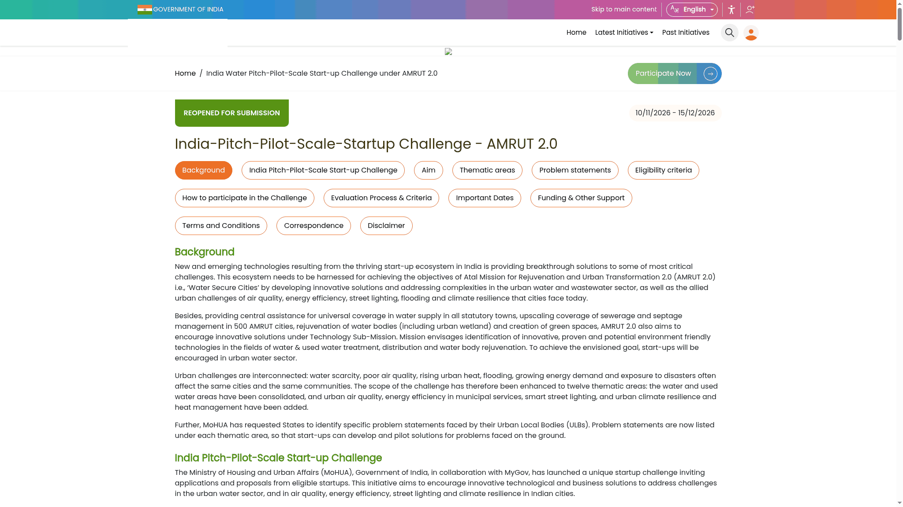

AMRUT 2.0 startup challenge: up to ₹20 lakh for urban solutions
The Ministry of Housing and Urban Affairs (MoHUA), with MyGov, has reopened its India Pitch-Pilot-Scale Start-up Challenge under AMRUT 2.0. DPIIT-recognised startups working on urban water and allied city problems can apply from 10 November to Tuesday, 15 December 2026. Selected startups can receive a grant of up to ₹20 lakh, paid against conditions and milestones.
This is a competitive grant for developing and piloting a solution with a city. It is not a scholarship, a guaranteed ₹20 lakh prize, a loan offer or an open cash giveaway. An individual idea without an eligible DPIIT-recognised startup does not meet the published entity requirement.
Who can apply
- The entity must be recognised as a startup by the Department for Promotion of Industry and Internal Trade (DPIIT).
- Its solution must fit one of the challenge's thematic areas or listed problem statements.
- The official eligibility does not restrict entry to a particular state. Kerala-based recognised startups can assess the same published criteria.
The checked page does not require an AI product. Eligible work includes physical treatment systems, efficient fixtures, cool roofs, water testing, municipal energy improvements and other technology or business solutions. Fit depends on the proposed solution and the evaluation, not on adding AI to the pitch.
What the grant actually covers
Selected startups can receive a maximum of ₹20 lakh in three tranches: ₹5 lakh, ₹7 lakh and ₹8 lakh. Release depends on the conditions and work milestones in the proposal. Treat ₹20 lakh as a ceiling, not a promised award for every application.
The money must be used for developing or improving the solution and piloting it with a city of choice. A Fund Utilisation Certificate is required at each milestone-completion stage. This is accountable project funding, not money for unrelated personal spending.
The official page also offers mentorship, help with scaling through industries and urban local bodies, visibility for startups achieving the desired outcomes, and a Ministry citation. It does not promise an automatic government procurement contract. Winners retain the developed solution/product, while still complying with challenge terms during and after the award.
Twelve areas, not only drinking water
- Fresh-water systems: groundwater, lakes, rainwater harvesting, salinity, water quality and related work.
- Hydro informatics: network mapping, modelling, sensor data and operational tools.
- Urban water management: dependable supply, pumps, contamination prevention and treatment.
- Non-revenue water and water-efficient plumbing: leaks, meters, fixtures, audits and pipe renewal.
- Urban sewerage management: mapping, blockages, treatment and reuse.
- Used-water management: septage, sanitation, safe cleaning, greywater and sludge recovery.
- Urban flooding and stormwater management.
- Water governance.
- Urban air quality.
- Energy efficiency in municipal services.
- Smart street lighting.
- Urban climate resilience and heat management.
The official problem list gives concrete challenges under these headings. Startups may propose a solution to a listed statement or another problem within the thematic areas. If using a listed statement, put its ID in the proposal. For example, FW-08 concerns ultra-low-cost residual-chlorine testing at the consumer end; NR-05 concerns reducing waste at taps and fixtures; CR-02 concerns affordable cooling for heat-trapping neighbourhoods. These are official examples, not guaranteed winning topics.
How selection works
A Screening Committee does the initial shortlisting. An Expert Committee examines shortlisted proposals for final selection. The published criteria include innovation, usability, subject relevance, social impact, replicability, scalability, ease of deployment, implementation risks and completeness of the proposal.
A useful proposal should therefore connect a real city problem to a solution that can be tested, explain what makes it different, and show how it could work beyond one site. An impressive title alone does not answer those criteria.
Prepare before opening the application
The list below is an AiCoN preparation checklist based on the public eligibility, evaluation criteria and funding terms. It is not a verified list of the logged-in form's required fields.
- Check your startup's DPIIT recognition and the entity/contact details you will use.
- Pick the relevant theme and, where applicable, the official problem-statement ID.
- Describe the city problem, intended users and evidence of the need.
- Explain the proposed solution, current stage, originality and how you would pilot it.
- Plan measurable outcomes, deployment risks and how the idea could be repeated elsewhere.
- Prepare a realistic milestone plan and budget for development/improvement and the city pilot. Be ready to account for the funds.
Only the live application can establish its final field names, upload formats and document requirements. We did not sign in to inspect those details.
How to apply
- Read the official challenge page, including eligibility, funding and terms.
- Use its Participate Now button. On 14 November, this route opened the official login page.
- New participants are offered MyGov Auth or DigiLocker/MeriPehchaan registration/login. Existing participants see an email/mobile OTP route. Choose the account authorised for your startup.
- After signing in, inspect the actual application. The public instructions say registered applicants upload their proposal using the Participate route and receive participation correspondence by email.
- Review the proposal and contact details carefully. Include the statement ID if responding to a listed problem. Submit within the window and save whatever confirmation the portal provides.
The current page states 15 December 2026 as the end date but does not state a closing time. Do not assume 11:59 PM. Submit early. We did not sign in, request an OTP, fill a proposal, upload a file or submit an application, so we have not verified the confirmation or editing options.

Fees and conditions to read carefully
No application fee is stated on the checked public challenge page. We did not enter the logged-in application, so do not treat that as a guarantee about every later cost. A startup still needs a realistic development and pilot budget.
The organiser can cancel, suspend or modify the contest, rules, prizes and funding without prior notice. Non-compliance can cancel participation. MoHUA's decision is final for dispute redressal. Read the current conditions again before submitting, accepting funding or making commitments with a city partner.
Correspondence uses the email supplied by the applicant; the organiser says it is not liable for email-delivery failures. Use an actively monitored address and check the portal and spam folder. Never share OTPs with unofficial agents or pay someone promising guaranteed selection.
Official questions and video guide
The page lists ankurp@asci.org.in and devika.jayssell@asci.org.in for challenge queries. Ask the organiser about unresolved timing, eligibility or funding mechanics rather than guessing.
We could not verify a reliable current English or Malayalam video walkthrough for this reopened 2026 application. Use the official written rules. Older challenge videos may describe a different window or fewer thematic areas.
What we verified
The official MoHUA/MyGov challenge page states the 10 November-15 December window, DPIIT-recognised entity requirement, twelve thematic areas, up-to-₹20-lakh grant, three milestone-linked tranches, utilisation-certificate requirement and selection criteria. We opened the public Participate route and saw the official login choices, but did not inspect or test the logged-in submission form.
Sources: official challenge page and terms and official participation route. Checked 14 November 2026. AiCoN explainer, not a government publication.